| Catalog | aRed0_01 |
|---|---|
| Author | Jaqcui Gilchrist, 2018/09/27 |
| Description | a reduction factor: fA=0.01 |
| Fault/Def Model | Fault Model 3.1, Geologic |
| Slip Velocity | 1.0 m/s |
| Average Element Area | 1.35 km^2 |
| Length | 7,322,762 events in 460,052 years |
| Frictional Params | a=0.001, b=0.008, (b-a)=0.007, ddotEQ=1 |
| Scatter | 2-D Hist |
|---|---|
 |  |
| Scatter | 2-D Hist |
|---|---|
 |  |
| Scatter |  |
|---|---|
| Distance/Velocity |  |
| M≥6 | M≥6.5 | M≥7 | M≥7.5 |
|---|---|---|---|
 |  |  | 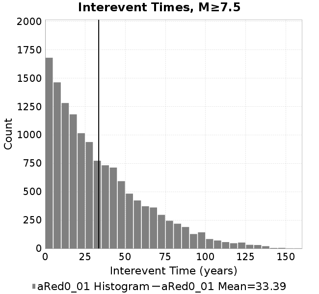 |
| M≥6 | M≥6.5 | M≥7 | M≥7.5 | |
|---|---|---|---|---|
| Elements | 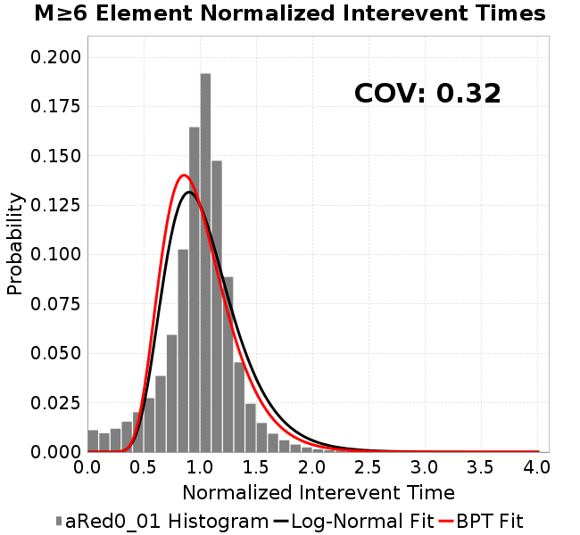 |  | 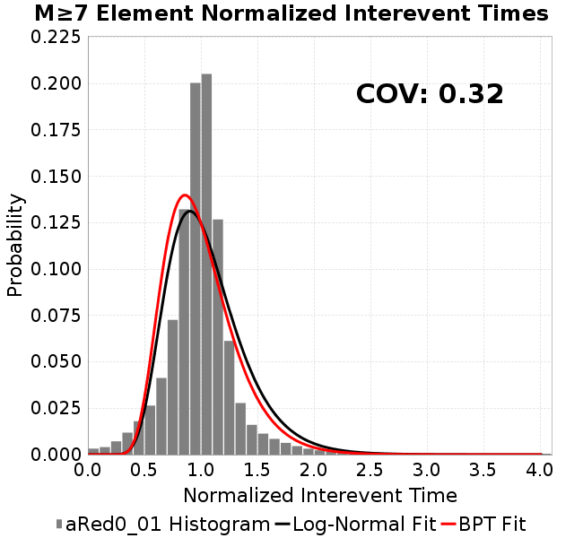 | 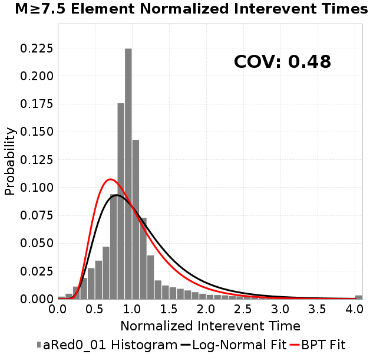 |
| Subsections |  |  |  | 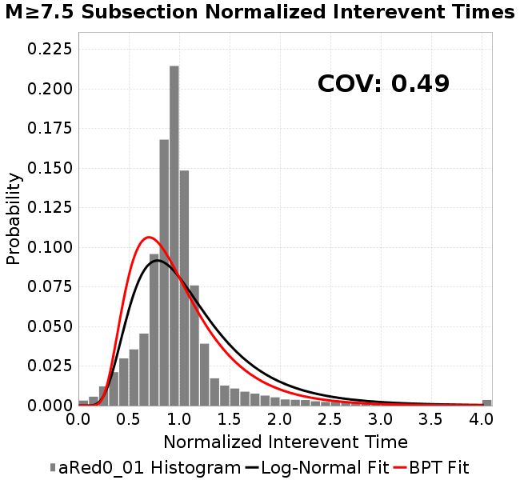 |
| Sections |  | 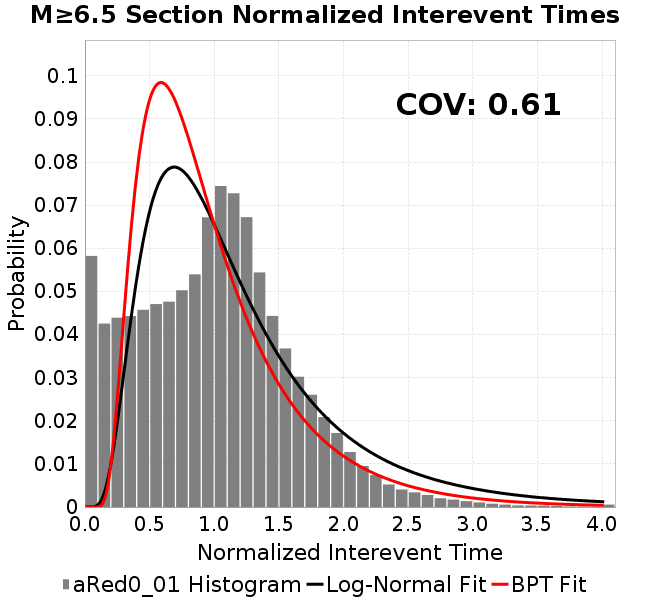 |  | 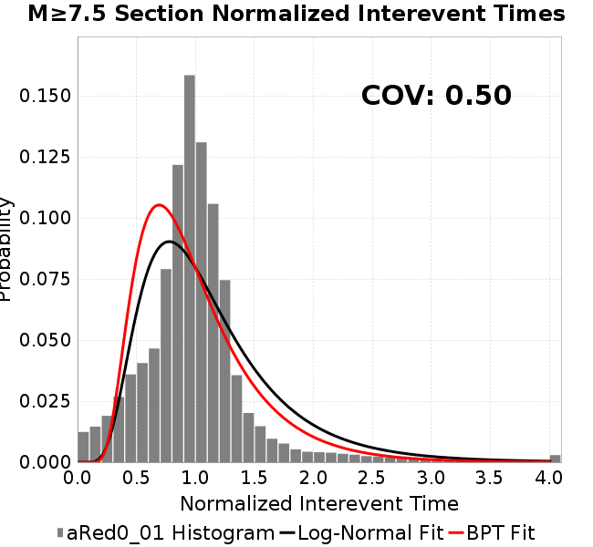 |

| Min Mag | Scatter | 2-D Hist |
|---|---|---|
| M≥6.0 |  |  |
| M≥6.5 |  |  |
| M≥7.0 |  |  |
| M≥7.5 | 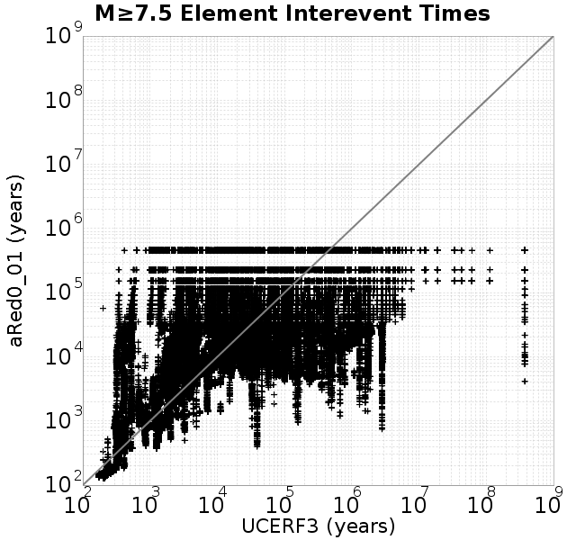 | 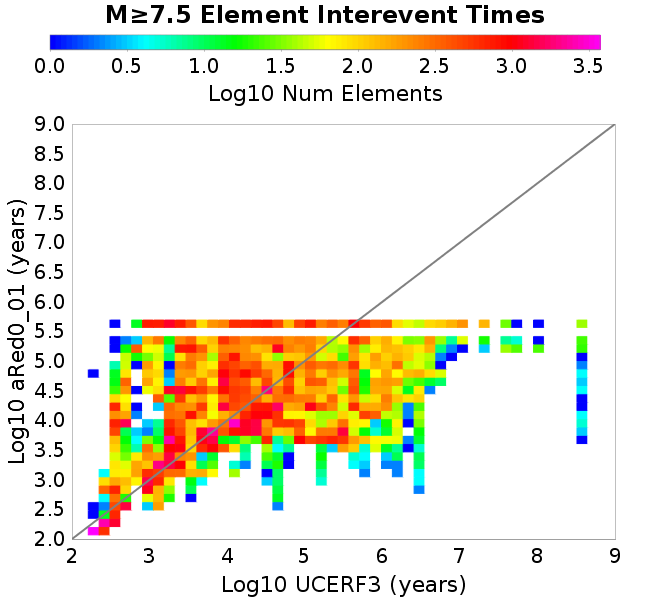 |
Subsections participate in a rupture if at least 20.0 % of its area ruptures
| Min Mag | Scatter | 2-D Hist |
|---|---|---|
| M≥6.0 |  | 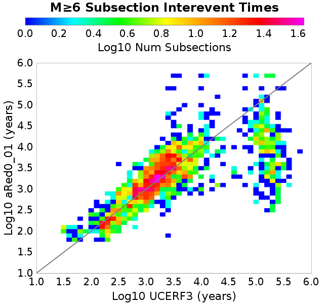 |
| M≥6.5 |  |  |
| M≥7.0 |  | 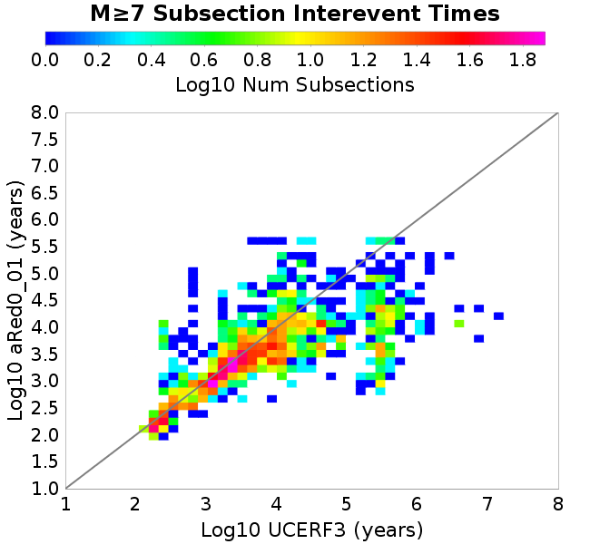 |
| M≥7.5 | 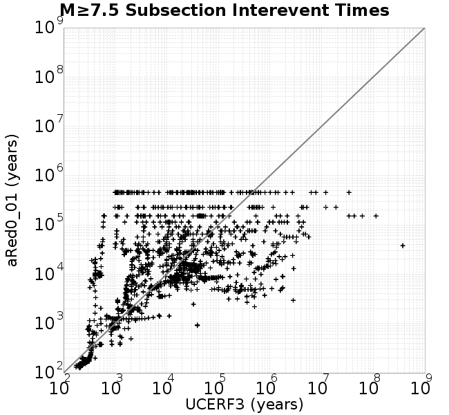 | 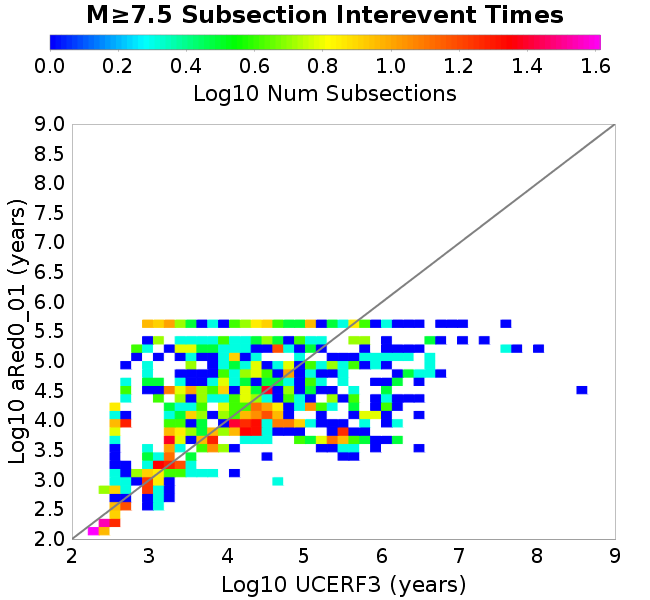 |
These plots use the 5 paleoseismic sites identified in Biasi & Scharer (2019) on the Hayward, N. SAF, S. SAF, and SJC faults. By default, a rupture is counted at a paleo site if the nearest element (at the surface) slips any amount. We also alternatively apply a probability of detection model. Those results are marked as 'Prob. Filtered'.
Paleoseismic sites table:
| Site Name | Data MRI (yr) | Data Annual Rate | Catalog MRI (yr) | Catalog Annual Rate | Catalog Occurences | Prob Filtered Catalog MRI (yr) | Prob Filtered Catalog Annual Rate | Prob Filtered Catalog Occurences |
|---|---|---|---|---|---|---|---|---|
| HOG | 191.00 | 0.005235602 | 356.10 | 0.0028082295 | 1278 | 360.57 | 0.0027734202 | 1262.13 |
| FRA | 119.00 | 0.008403362 | 117.34 | 0.008522522 | 3877 | 122.66 | 0.008152675 | 3708.75 |
| COA | 181.00 | 0.005524862 | 177.85 | 0.0056225727 | 2557 | 189.47 | 0.005278008 | 2400.35 |
| SCZ | 106.00 | 0.009433962 | 119.23 | 0.008386881 | 3817 | 138.02 | 0.0072454447 | 3297.42 |
| TYS | 329.00 | 0.0030395137 | 341.54 | 0.0029279091 | 1333 | 377.46 | 0.0026492649 | 1206.16 |
| TOTAL | 31.61 | 0.0316373 | 35.38 | 0.028266164 | 12862 | 38.31 | 0.026100181 | 11876.36 |
Paleoseismic Plots:
 | 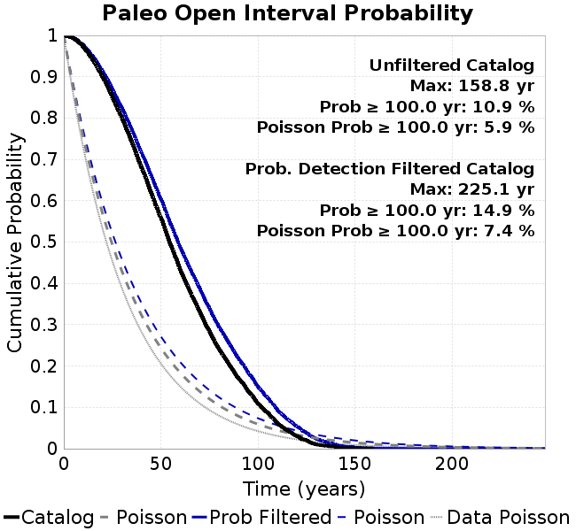 |
|---|
Open interval probabilities table:
| Open Interval (yr) | Catalog Probability | Catalog Poisson Probability | Prob. Filtered Catalog Probability | Prob. Filtered Catalog Poisson Probability | Data Poisson Probability |
|---|---|---|---|---|---|
| 10.00 | 0.97291064 | 0.75377476 | 0.9768528 | 0.7702795 | 0.72878754 |
| 20.00 | 0.8997345 | 0.56817645 | 0.9128546 | 0.59333056 | 0.53113127 |
| 30.00 | 0.7994304 | 0.42827708 | 0.8237758 | 0.45703036 | 0.3870819 |
| 40.00 | 0.67981637 | 0.32282445 | 0.7155123 | 0.35204113 | 0.28210047 |
| 50.00 | 0.5578876 | 0.24333695 | 0.603511 | 0.27117008 | 0.2055913 |
| 60.00 | 0.4323778 | 0.18342125 | 0.4864982 | 0.20887674 | 0.14983238 |
| 70.00 | 0.33150303 | 0.13825831 | 0.38771448 | 0.16089348 | 0.10919597 |
| 80.00 | 0.24073458 | 0.10421563 | 0.2940165 | 0.12393296 | 0.079580665 |
| 90.00 | 0.16946067 | 0.078555115 | 0.21751271 | 0.095463015 | 0.057997398 |
| 100.00 | 0.10896859 | 0.059212867 | 0.1493028 | 0.07353321 | 0.04226778 |
| 110.00 | 0.061126597 | 0.044633165 | 0.09321746 | 0.056641124 | 0.030804234 |
| 120.00 | 0.030392997 | 0.033643354 | 0.05422666 | 0.043629497 | 0.022449743 |
| 130.00 | 0.01021987 | 0.025359513 | 0.023961574 | 0.03360691 | 0.016361093 |
| 140.00 | 0.0042901104 | 0.019115362 | 0.00993294 | 0.025886713 | 0.011923761 |
| 150.00 | 6.483254E-4 | 0.014408678 | 0.0030751799 | 0.019940004 | 0.008689889 |
| 160.00 | 0.0 | 0.0108608985 | 0.0011773033 | 0.0153593775 | 0.0063330824 |
| 170.00 | 0.0 | 0.008186671 | 6.5324875E-4 | 0.0118310135 | 0.0046154717 |
| 180.00 | 0.0 | 0.0061709066 | 2.7437747E-4 | 0.009113188 | 0.0033636983 |
| 190.00 | 0.0 | 0.004651474 | 1.2568307E-4 | 0.007019702 | 0.0024514215 |
| 200.00 | 0.0 | 0.0035061636 | 8.866858E-5 | 0.005407132 | 0.0017865654 |
| 210.00 | 0.0 | 0.0026428576 | 4.6102152E-5 | 0.0041650035 | 0.0013020267 |
| 220.00 | 0.0 | 0.0019921195 | 1.873329E-5 | 0.0032082167 | 9.489008E-4 |
| 230.00 | 0.0 | 0.0015016095 | 0.0 | 0.0024712237 | 6.915471E-4 |
These plots use the full set of UCERF3 paleoseismic sites. By default, a rupture is counted at a paleo site if the nearest element (at the surface) slips any amount. We also alternativeslyapply a probability of detection model. Those results are marked as 'Prob. Filtered'.
Paleoseismic sites table:
| Site Name | Data MRI (yr) | Data Annual Rate | Catalog MRI (yr) | Catalog Annual Rate | Catalog Occurences | Prob Filtered Catalog MRI (yr) | Prob Filtered Catalog Annual Rate | Prob Filtered Catalog Occurences |
|---|---|---|---|---|---|---|---|---|
| SSanAndreasBurroFlats | 205.44 | 0.0048677 | 208.58 | 0.004794263 | 2182 | 236.29 | 0.0042320816 | 1925.81 |
| SSanAndreasIndio | 277.37 | 0.0036053 | 174.04 | 0.0057457592 | 2613 | 184.53 | 0.005419123 | 2464.5 |
| SSAFMCreek1000Palms | 261.33 | 0.0038266 | 1543.97 | 6.4768136E-4 | 294 | 2247.87 | 4.448659E-4 | 201.54 |
| NSanAndreasFortRoss | 306.28 | 0.003265 | 186.41 | 0.0053646555 | 2442 | 189.10 | 0.0052881753 | 2407.16 |
| NSanAndreasNorthCoast | 263.87 | 0.0037898 | 178.37 | 0.005606406 | 2552 | 182.93 | 0.0054666055 | 2488.35 |
| CalaverasfaultNorth | 618.05 | 0.001618 | 166.11 | 0.0060199685 | 2739 | 237.86 | 0.0042041065 | 1912.62 |
| ElsinoreTemecula | 1019.16 | 9.812E-4 | 677.97 | 0.0014749827 | 671 | 704.96 | 0.001418514 | 645.29 |
| ElsinoreWhittier | 3196.93 | 3.128E-4 | 1497.72 | 6.676796E-4 | 304 | 1573.23 | 6.3563325E-4 | 289.26 |
| SSAFCarrizoBidart | 114.71 | 0.0087179 | 118.61 | 0.008431132 | 3837 | 122.39 | 0.008170375 | 3718.31 |
| SanJacintoHogLake | 311.78 | 0.0032074 | 356.10 | 0.0028082295 | 1278 | 360.23 | 0.0027759694 | 1263.31 |
| PuenteHills | 3506.31 | 2.852E-4 | 5079.56 | 1.9686736E-4 | 90 | 5457.59 | 1.8323117E-4 | 83.79 |
| SanGregorioNorth | 1019.06 | 9.813E-4 | 391.56 | 0.002553856 | 1162 | 405.31 | 0.0024672283 | 1122.51 |
| SanJacintoSuperstition | 508.26 | 0.0019675 | 1212.58 | 8.2469004E-4 | 375 | 1296.97 | 7.710274E-4 | 350.39 |
| SSanAndreasWrightwood | 106.04 | 0.0094304 | 150.84 | 0.006629361 | 3016 | 152.63 | 0.006551655 | 2980.64 |
| SSanAndreasPitmanCanyon | 173.48 | 0.0057643 | 142.13 | 0.0070358436 | 3201 | 157.86 | 0.006334884 | 2882.04 |
| SSanAndreasPlungeCreek | 205.36 | 0.0048695 | 359.08 | 0.0027849267 | 1268 | 442.54 | 0.0022597052 | 1028.86 |
| FrazierMountianSSAF | 148.57 | 0.0067307 | 117.34 | 0.008522522 | 3877 | 122.60 | 0.008156371 | 3710.45 |
| NSanAndreasSantaCruzSeg | 109.84 | 0.0091041 | 119.23 | 0.008386881 | 3817 | 138.10 | 0.0072413017 | 3295.54 |
| RodgersCreek | 325.31 | 0.003074 | 166.85 | 0.0059933616 | 2727 | 226.53 | 0.0044143517 | 2008.01 |
| GreenValleyMasonRoad | 293.31 | 0.0034094 | 1671.29 | 5.9834117E-4 | 273 | 2291.09 | 4.3647373E-4 | 198.95 |
| HaywardfaultNorth | 318.34 | 0.0031413 | 366.89 | 0.0027256308 | 1240 | 377.46 | 0.002649268 | 1205.25 |
| HaywardfaultSouth | 167.57 | 0.0059677 | 341.54 | 0.0029279091 | 1333 | 376.97 | 0.0026527266 | 1207.66 |
| Compton | 2658.16 | 3.762E-4 | 5651.01 | 1.7695942E-4 | 81 | 6292.66 | 1.5891533E-4 | 72.81 |
| SSanAndreasCoachella | 178.45 | 0.0056037 | 177.85 | 0.0056225727 | 2557 | 189.56 | 0.0052752597 | 2399.1 |
| ElsinoreGlenIvy | 179.12 | 0.0055828 | 565.11 | 0.001769582 | 805 | 612.02 | 0.0016339326 | 743.22 |
| GarlockCentralallevents | 1434.93 | 6.969E-4 | 629.81 | 0.0015877868 | 723 | 640.78 | 0.0015605966 | 710.61 |
| NSanAndreasAlderCreek | 869.64 | 0.0011499 | 186.48 | 0.005362458 | 2441 | 189.44 | 0.005278616 | 2402.83 |
| SSanAndreasPallettCreek | 149.30 | 0.006698 | 150.89 | 0.006627162 | 3015 | 152.71 | 0.0065483353 | 2979.15 |
| GarlockWesternallevents | 1230.16 | 8.129E-4 | 819.15 | 0.0012207757 | 555 | 840.54 | 0.0011897106 | 540.88 |
| ElsinoreFaultJulian | 3250.98 | 3.076E-4 | 1233.10 | 8.109656E-4 | 369 | 1260.47 | 7.9335796E-4 | 361.01 |
| TOTAL | 9.08 | 0.1101451 | 14.26 | 0.07010207 | 31901 | 15.81 | 0.06325957 | 28787.31 |
Paleoseismic Plots:
| 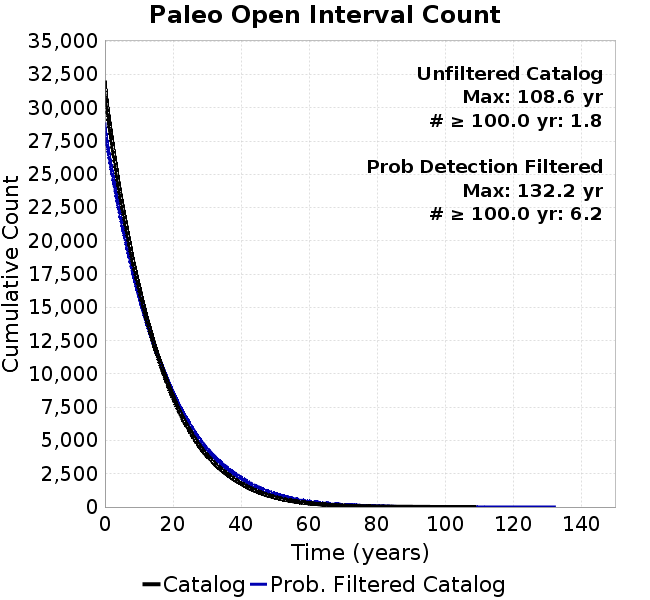 |  |
|---|
Open interval probabilities table:
| Open Interval (yr) | Catalog Probability | Catalog Poisson Probability | Prob. Filtered Catalog Probability | Prob. Filtered Catalog Poisson Probability | Data Poisson Probability |
|---|---|---|---|---|---|
| 10.00 | 0.85451096 | 0.4960787 | 0.8764357 | 0.53121114 | 0.33238843 |
| 20.00 | 0.5924993 | 0.24609408 | 0.6428259 | 0.28218526 | 0.110482074 |
| 30.00 | 0.35646915 | 0.12208203 | 0.4155142 | 0.14989994 | 0.036722966 |
| 40.00 | 0.19950576 | 0.060562294 | 0.25157177 | 0.07962852 | 0.012206289 |
| 50.00 | 0.09717266 | 0.030043663 | 0.13470387 | 0.042299554 | 0.004057229 |
| 60.00 | 0.042739335 | 0.014904022 | 0.06674356 | 0.022469994 | 0.001348576 |
| 70.00 | 0.018505773 | 0.007393568 | 0.03204778 | 0.011936311 | 4.4825108E-4 |
| 80.00 | 0.0070837224 | 0.0036677916 | 0.014031015 | 0.0063407007 | 1.4899348E-4 |
| 90.00 | 0.0031802305 | 0.0018195133 | 0.006237839 | 0.0033682508 | 4.952371E-5 |
| 100.00 | 4.1979068E-4 | 9.026218E-4 | 0.0014736508 | 0.0017892523 | 1.6461108E-5 |
| 110.00 | 0.0 | 4.4777142E-4 | 4.467548E-4 | 9.504707E-4 | 5.4714824E-6 |
| 120.00 | 0.0 | 2.2212986E-4 | 8.256266E-5 | 5.049006E-4 | 1.8186574E-6 |
| 130.00 | 0.0 | 1.101939E-4 | 1.4911287E-5 | 2.6820882E-4 | 6.045007E-7 |
| 140.00 | 0.0 | 5.4664844E-5 | 0.0 | 1.424755E-4 | 2.0092905E-7 |
We first create a tapered moment release time series for the entire catalog. Each event's moment is distributed across a 25 year Hanning (cosine) taper. Here is a plot of a random 2,000 year section of this time series:
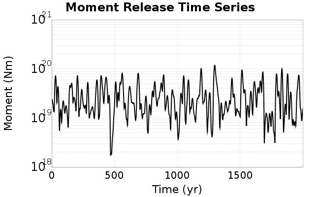
We then compute Welch's power spectral density estimate on the entire time series. Results are plotted below, with a Poisson randomization of the catalog also plotted in gray as a control. Significant deviations above the Poisson model indicate synchronization at that period.

A_1 = 0.001
fA = 0.01
B_1 = 0.008
muSlipAmp_1 = .0
muSlipInvDist_1 = 1.0
cohesion = 0.0
Dc_1 = 1.0000000000000000818e-05
mu0_1 = 0.6
ddotStar_1 = 9.9999999999999995475e-07
ddotAB_1 = 9.9999999999999995475e-07
alpha_1 = 0.0
theta0_1 = 200000000
tau0_1 = 55.1
sigma0_1 = 100
sigmaFracPin = .5
lowSigmaAction = 1
maxThetaPin = 1.0e13
ddotEQ_1 = 1
ddotEQFname =
stressOvershootFactor = 0.10000000000000000555
lameLambda = 30000
lameMu = 30000
slowSlip_1 = 0
nEq = 100000000000
KZeroFrac = 0
muPin = 1.0
tStart = 0
maxT = 3.16e13
maxWallTime = 169200
maxTrans = 1.0000000000000000159e100
faultFname = UCERF3FM.15km.1km.tri.flt
outFnameInfix = aRed0_01
writeTau = 2
writeSigma = 2
writeSlip = 0
writeSlipSpeed = 0
writeState = 0
writeTheta = 2
writePED = 1
writeTransitions = 1
minDtWrite = 0
minDtWriteCoseismic = 0
minDtWriteInterseismic = 0
minMagWrite = 7.7
writeStiffness = 0
stressRateSpecification = 1
dMu3 = 0.01000000000000000
initTauFname =
initSigmaFname =
initThetaFname =
initSlipSpeedFname =
AFname =
BFname =
DcFname =
mu0Fname =
ddotStarFname =
ddotABFname =
alphaFname =
KTauFname = /u/sciteam/gilchris/scratch/stiffness_25a589d/Ktau.25a589d.out
KSigmaFname = /u/sciteam/gilchris/scratch/stiffness_25a589d/Ksigma.25a589d.out
tFailFname =
tauFailFname =
tauDotFname =
sigmaDotFname =
KZeroFname = UCERF3FM.15km.1km.tri.KZero
pinnedFname = UCERF3FM.15km.1km.tri.pin
neighborFname = UCERF3FM.15km.1km.tri.neighbors
stressRateFname =
slowSlipFname =
writePatchFname =
DEBUG = 0
ZBrentUpperBracket = 0
receiverElementAreaFrac = 0.8
receiverElementIntTol = 1.0e-4
receiverElementSubdivisionMax = 4
tgfDist1 = 3
tgfDist1 = 10
lowSigmaAction = 1
highSigmaAction = 0